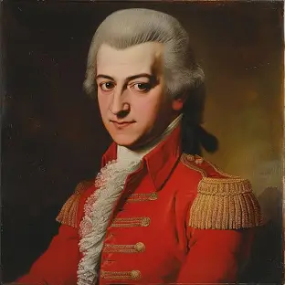
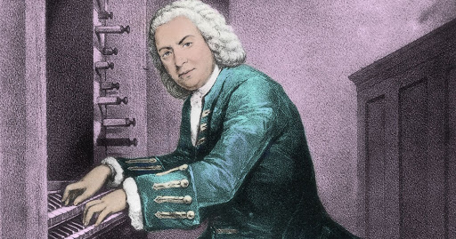
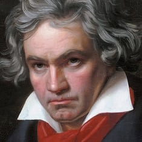
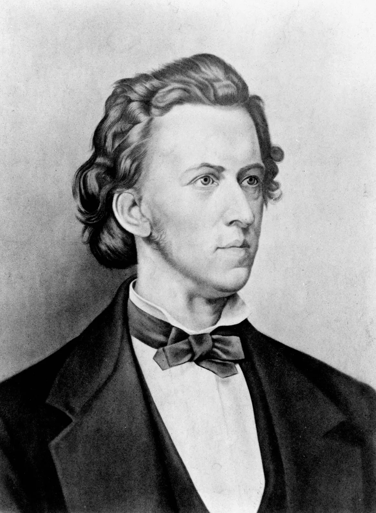
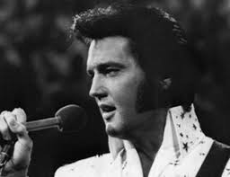
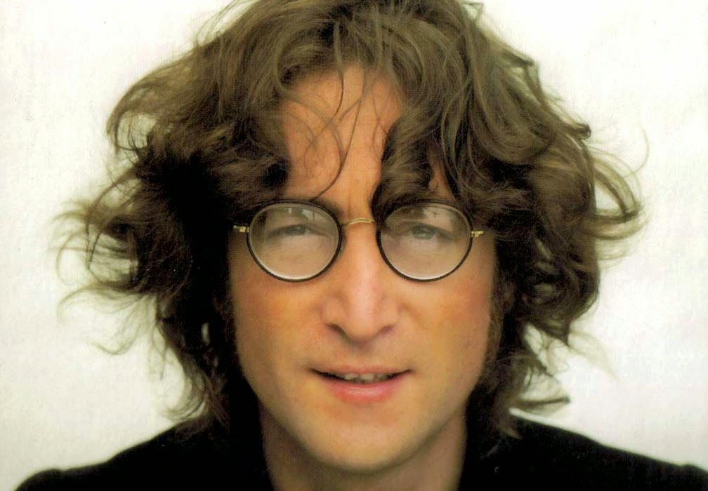

Influencias
Al hablar de las influencias musicales que puede recibir un músico o un artista o un ser humano a lo largo de su vida, estamos hablando de una compilación de conocimientos, experiencias e información culturales, conceptuales, intelectuales, científicas (musicales), emocionales, tecnológicas, lúdicas, sociales, geográficas, etc.
De entre todas estás repercusiones musicales están las que se pueden elegir y las que no, las que se aparecen al estudiar o las que inevitablemente escuchamos en nuestra experiencia cotidiana y a las que somos expuestos inevitablemente.
A continuación una clasificación de algunas de las muchas fuentes musicales que más han repercutido en la música.
Wolfgang Amadeus Mozart
Nacido en Salzburgo, Austria, en 1756, es probablemente el compositor más conocido de la historia, así como uno de los más prodigiosos y versátiles de la música clásica. Desde sus primeras composiciones infantiles hasta sus sinfonías y óperas más maduras, Mozart demostró una habilidad innata para la melodía y la armonía. En su repertorio destacan 41 sinfonías, 27 conciertos de piano, 23 óperas, 18 sonatas de violín y el doble para el chelo. Se dice que escribía partituras de orquestas enteras sin necesidad de realizar correcciones de ningún tipo, sus borradores eran su versión final de la obra. Un genio compositor de música clásica sin precedentes.
Johann Sebastian Bach
Compositor alemán del período barroco conocido por su destreza en el contrapunto y su habilidad para tejer complejas texturas musicales. Obras como “El Arte de la Fuga”, “Misa en si menor” y el “Conciertos de Brandeburgo” son ejemplos magistrales de su maestría técnica y espiritualidad musical. Bach dejó un legado duradero que influyó en generaciones de compositores y sigue siendo una piedra angular de la música clásica.
Ludwig van Beethoven
Cuando los géneros que ya existen no son suficientes, inventas otro. Esto fue lo que hizo Beethoven, un virtuoso intérprete y compositor visionario que desafió las convenciones musicales de su tiempo, sentando las bases para la música romántica. Su sordera no impidió que creara algunas de las composiciones más poderosas y expresivas de la historia. Obras como la “Novena Sinfonía” con su famoso “Himno a la Alegría”, la “Misa Solemnis” y la Sonata para piano №14, “Claro de Luna”, revelan la intensidad emocional y la innovación que caracterizan su obra.
Antonio Vivaldi

Nació en Venecia en 1678 y murió en Viena en 1741. Se le considera uno de los más grandes compositores barrocos, ya que compuso más de 700 obras, entre las que se cuentan más de 400 conciertos para flauta, violín, y una variedad de instrumentos como flautín, oboe, mandolina, laúd, entre otros; y cerca de 46 óperas. Es especialmente popular como autor de la serie de conciertos para violín y orquesta “Las cuatro estaciones”. Su maestría se refleja en haber cimentado la estructura del concierto con sus tres movimientos: allegro, adagio y allegro.
Frédéric Chopin
Nació en 1810 en Zelazowa Wola (Gran Ducado de Varsovia) y murió en París a los 39 años, a causa de tuberculosis. Fue un virtuoso pianista y compositor, sumergido en el Romanticismo poético y lírico. Su maravillosa técnica, su refinamiento estilístico y su elaboración armónica se han comparado históricamente, por su influencia en la música posterior, con las de Mozart, Beethoven, Brahms, Liszt o Rajmáninov.
Con sus composiciones, estos cinco músicos han trascendido el tiempo y el espacio, recordándonos la capacidad única de la música para conmovernos, inspirarnos y unirnos. En este Día Internacional de la Música, celebramos el legado duradero que han tejido en el tapiz sonoro de la humanidad.
James Marshall (Jimi Hendrix)

Jimi Hendrix (nacido como Johnny Allen Hendrix: Seattle, Estados Unidos, 27 de noviembre de 1942 Londres, Reino Unido, 18 de septiembre de 1970) fue un guitarrista, cantante y compositor estadounidense. Es considerado y citado frecuentemente por varios artistas, por diversas revistas especializadas en música, por varios críticos y la prensa en general y por la admiración y el cariño de la gente como el más grande guitarrista de la historia del rock and roll, además de ser uno de los mayores innovadores y más influyentes artistas en una gran cantidad de géneros.
Elvis Presley
Elvis Aaron Presley (8 de enero de 1935 16 de agosto de 1977) fue uno de los cantantes estadounidenses más populares del siglo XX, considerado como un icono cultural y conocido ampliamente bajo su nombre de pila, Elvis. Se hace referencia a él frecuentemente como «el Rey del rock and roll» o simplemente «el Rey».
Michael Jackson

Michael Joseph Jackson (Gary, Indiana, 29 de agosto de 1958 - Los Ángeles, California, 25 de junio de 2009), conocido en el mundo artístico como Michael Jackson, fue un cantante, compositor y bailarín estadounidense de música pop y sus variantes. Conocido como el «Rey del Pop», logró cerca de 80 récords por diferentes motivos y fue incluido en el Libro Guinness de los récords en numerosas ocasiones, por motivos entre los que destacan, entre otros, ser el artista musical más exitoso de todos los tiempos, con cerca de 750 millones de discos vendidos; el artista musical más premiado de la historia, con cientos de galardones
John Lennon
John Winston Ono Lennon (de nacimiento solo John Winston Lennon), MBE (Liverpool, Reino Unido, 9 de octubre de 1940- Nueva York, Estados Unidos, 8 de diciembre de 1980), fue un músico multi-instrumentista y compositor que saltó a la fama como uno de los miembros fundadores de The Beatles, una banda de rock británica activa durante la década de 1960, у reconocida como la más comercialmente exitosa y críticamente aclamada en la historia de la música popular. Junto con Paul McCartney, formó una de las parejas de compositores más exitosas del siglo XX.
Bob Dylan

Este joven ya más que adulto fue uno de los precursores de los poemas musicales. Desde hace muchísimo tiempo hemos visto como grandes poetas nos han regalado infinidad de versos y también hemos escuchado la maestría de los grandes músicos, pero tuvimos que esperar hasta la década de los 60’s para ver como poesía y música formaron una. Es cierto que durante mucho tiempo se ha musicalizado poemas y se ha poetizado canciones pero no se ha logrado jamás el resultado que Bob Dylan consiguió en sus primeras canciones. El no inventó nada, tan solo ordenó dos tipos de arte para hacerlos uno.
Bob Marley
Fue el que colocó la música tradicional de una zona del planeta a nivel mundial. El fenómeno reggae se extendió por los lugares más recónditos y gracias a ello fue la visión que le dió un músico religioso de las islas Jamaica. Este éxito fue un producto social ya que tras la colonización de dicho país, los habitantes dieron una perspectiva nueva a la música de los estilos predominantes de los colonizadores como el jazz y el ska. Bob Marley, tras largos años de éxitos sin pausa, logró poner al reggae en un escalón muy alto de la escalera musical dando lugar a nuevos estilos como el dub, que a su vez ayudó a la aparición del rap y hip hop en Nueva York
Freddie Mercury

Cuando más hacía falta un icono del rock ahí estuvo él. Ejemplo parecido al de Elvis Presley, y es que no es casualidad que Freddie Mercury fuera una estrella mundial ya que su gran voz y sus grandes extravagancias como tal lo hicieron único. Como espejo de la sociedad, el sudafricano subió como la espuma como icono, también, de la homosexualidad, destapando cualquier tapujo y prejuicio que tuvieran sobre él. Solo importaba su voz, luego estaba él. Hasta su muerte causó impacto ya que fue uno de los miles que en los años 80’s se contagió de la enfermedad del sida. Todo una figura del liberalismo humano.
Si desea ver albúms influyentes de la música vea: 20 Discos innovadores que cambiaron la historia de la Música